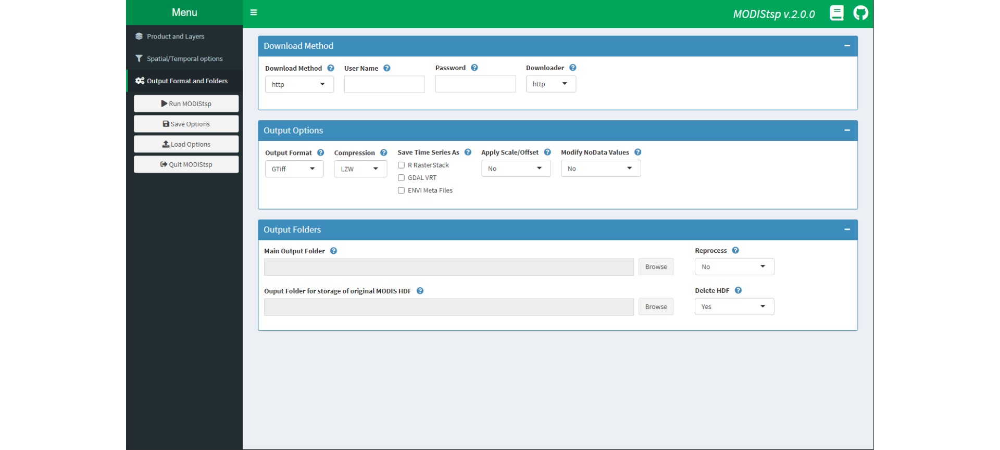
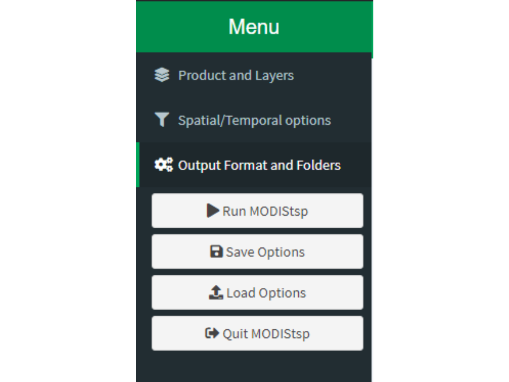

Running the tool in Interactive Mode: the MODIStsp GUI
Source:vignettes/interactive_execution.Rmd
interactive_execution.RmdThe easiest way to use MODIStsp is to use its powerful GUI (Graphical User Interface) for selection of processing options, and then run the processing.
To open the GUI, load the package and launch the MODIStsp function, with no parameters:
This opens a GUI from which processing options can be specified and eventually saved (or loaded from a previously saved file).
The GUI allows selecting all processing options required for the creation of the desired MODIS time series. The GUI uses a dashboard structure, divided in the following tabs. The available processing options configurable in each tab are described in the following.
Selecting Processing Parameters
Product and Layers Tab

The top-most tab allow to specify details of the desired MODIS Product and Layers to be processed:
- “Category” and “Product”: selects the MODIS product of interest;
- MODIS platform(s): selects if only TERRA, only AQUA or Both MODIS platforms should be considered for download and creation of the time series;
-
MODIS layers to be processed: the user
must select which MODIS original layers and/or derived
Quality Indexes (QI) and Spectral Indexes (SI) layers should be
processed:
- the left-hand selector allows to select which original MODIS layers should be processed;
- the central selector allows to select which Quality Indicators should be extracted from the original MODIS Quality Assurance layers;
- for MODIS products containing surface reflectance data, the right-hand selector allows selecting which additional Spectral Indexes should be computed.
The following commonly used Spectral Indexes are available for computation by default:
You can however specify other SIs to be computed without modifying MODIStsp source code by clicking on the “Add New Spectral Index” button, which allow providing info related to the new desired SI using a simple GUI interface.

Provided information (e.g., correct band-names, computable formula, etc…) is automatically checked upon clicking “Set New Index”. On success, the new index is added in the list of available ones for all products allowing its computation. Clicking “Done!” returns to the main.
Note: all custom defined indexes can be removed by
using the MODIStsp_resetindexes() function.
Spatial/Temporal Options Tab
The middle tab allow specifying details about the temporal and spatial extent of the analysis.

Temporal Extent
Specify the starting and ending dates to be considered for the creation of the time in the series corresponding fields.
The Date Range Type drop-down menu allows to choose between two options:
full: all available images between the starting and ending dates are downloaded and processed;
seasonal: data is downloaded only for one part of the year, but for multiple years. For example, if the starting date is 2005-03-01 and the ending is 2010-06-01, only the images of March, April and May for the years between 2005 and 2010 will be downloaded. This allows to easily process data concerning a particular season of interest.
Output Projection
Specify the options to be used for reprojecting and resizing the MODIS images.
“Output Projection”: select either the Native MODIS projection (Default) or specify a user-defined one. To specify a user selected projection, select “Change” and then insert a valid “EPSG” code or WKT string in the pop-up window. Validity of the new projection string is automatically checked, and error messages issued if the check fails.
“Output Resolution”, “Pixel Size” and “Resampling Method”: specify whether output images should inherit their spatial resolution from the original MODIS files, or be resampled to a user-defined resolution. In the latter case, output spatial resolution must be specified in the measure units of the selected output projection. Resampling method can be chosen among the ones available for the “gdalwarp” routine. Note: resampling methods different than Nearest Neighbour” and “Mode” (Useful for down-sampling purposes) should used carefully. Other resampling methods (e.g., bilinear, cubic) i) cannot be used for resampling of categorical variables such as the QA and QI layers, and ii) using them on continuous variable (e.g., reflectance, VI values) without performing an a-priori data cleaning would risk to contaminate the values of high-quality observations with those of low-quality ones.
Spatial Extent
Allows defining the area of interest for the processing. Four main options are possible, and can be selected using a dropdown menu.
-
Select Tiles: specify which MODIS tiles need to be processed either by:
- Using the “Start” and “End” horizontal and vertical sliders in the
Required MODIS Tiles frame.
- Selecting the “From Map” option in the dropdown and clicking on “change selection”. A map will open, allowing interactive selection of the required tiles
- Using the “Start” and “End” horizontal and vertical sliders in the
Required MODIS Tiles frame.
Note that during processing, data from the different tiles is mosaicked, and a single file covering the total area is produced for each acquisition date. For this reason, selected tiles must cover a rectangular area.
Select Bounding Box: manually insert the coordinates of the Upper Left and Lower Right corners of the area of interest in the Bounding Box frame. Coordinates of the corners must be provided in the coordinate system of the selected output projection.
Load From File: click the “Browse” button and select a raster or vector spatial file that will be used to compute the required bounding box in output projection coordinates.
Draw on Map: click the “Draw Extent” button a map will open in a
window, allowing interactive selection of the spatial extent using the tools on the left.
Output Format, Options and Folders Tab
The last tab allows specifying some options concerning processing, and the output folders.

Download Method
Select the method to be used for download. Available choices are:
http: download through http from NASA lpdaac http archive (http://e4ftl01.cr.usgs.gov). This requires providing a user name and password, which can be obtained by registering an account at the address https://urs.earthdata.nasa.gov/profile;
offline: this option allows to process/reprocess HDF files already available on the user’s PC without downloading from NASA – useful if the user already has an archive of HDF images, or to reprocess data already downloaded via
MODIStsp()to create time series for an additional layer (it is fundamental that the HDFs are those directly downloaded from NASA servers; see here for additional details).
A second dropdown menu allows selecting if using standard http download to access NASA servers, or using the aria2c downloader, which may speed-up the download. This requires however that that the “aria2c” software is installed in your system. To download and install it, see aria2.github.io.
Output Options
Several processing options can be set using check-boxes/dropdowns:
Output Files Format: two of the most commonly formats used in remote sensing applications are available at the moment: ENVI binary and GeoTiff. If GeoTiff is selected, the type of file compression can be also specified among “None”, “PACKBITS”, “LZW” and “DEFLATE”.
Save Time Series as: specify if virtual multitemporal files should be created. These virtual files allow access to the entire time series of images as a single file without the need of creating large multitemporal raster images. Available virtual files formats are “R” rasterStacks, ENVI meta-files and GDAL “vrt” files. In particular,
RRasterStacks may be useful in order to easily access the preprocessed MODIS data withinRscripts (see also here).Apply Scale/Offset: specify if scale and offset values of the different MODIS layers should be applied. If selected, outputs are appropriately rescaled on the fly, and saved in the true “measure units” of the selected parameter (e.g., spectral indexes are saved as floating point values; Land Surface Temperature is saved in degrees Kelvin, etc.).
Modify No Data Values: specify if NoData values of MODIS layers should be kept at their original values, or changed to those specified within the
MODIStsp_Products_OptsXML file. By selecting “Yes” in the “Change Original NoData values” check-box, NoData of outputs are set to the largest integer value possible for the data type of the processed layer (e.g., for 8-bit unsigned integer layers, NoData is set always to 255, for 16-bit signed integer layers to 32767, and for 16-bit unsigned integer layers to 65535). Information about the new NoData values is stored both in the output rasters, and in the XML files associated with them. Note: some MODIS layers have multiple NoData (a.k.a. fill) values. if Modify No Data is set to “Yes”,MODIStsp()will convert all fill values to a common output NoData value.
Output Folders
Main MODIStsp Output Folder
Select the main folder where the pre-processed time series data will
be stored. All MODIStsp() outputs will be placed in
specific sub-folders of this main folder (see here for details on MODIStsp naming
conventions).
The “Reprocess” selector allows to decide if images
already available should be reprocessed if a new run of
MODIStsp() is launched with the same output folder. If set
to “No”, MODIStsp() skips dates for which output files
following the MODIStsp naming conventions are already
present in the output folder. This allows to incrementally extend MODIS
time series without reprocessing already available dates.
Output Folder for storage of original MODIS HDF
Select the folder where downloaded original MODIS HDF files downloaded from NASA servers will be stored.
The “delete HDF” selector allows also to decide if the downloaded images should be deleted from the file system at the end of the processing. To avoid accidental file deletion, this is always set to “No” by default, and a warning is issued before execution whenever the selection is changed to “Yes”.
Saving and Loading Processing Options

Specified processing parameters can be saved to a JSON file for later use by clicking on the Save Options button in the sidebar.
Previously saved options can be restored clicking on the Load Options button and navigating to the previously saved JSON file.
Starting the processing
Once you are happy with your choices, click on Run
MODIStsp. MODIStsp() will start accessing NASA
servers to download and process the MODIS data corresponding to your
choices.
For each date of the specified time period, MODIStp()
downloads and preprocesses all HDF images required to cover the desired
spatial extent. Informative messages concerning the status of the
processing are provided on the console, as well as on a self-updating
progress window.
The processed time series are saved in specific subfolders of the main selected output folder, as explained in detail here.